Kinlist
I plan to incriminate myself more detailed. Eventually.
/ last upd. 1 nov 2026
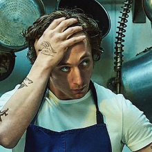
Carmy / Carmen Berzatto
The Bear
The most recent character I found this relatable just to sit through the show with "I am on this picture and I don't like it" emotion, even though he is a great character but oooof. Where do I even start. A younger sibling, That ✨creative✨, sensitive and defensive archetype of a younger sibling specifically. And the way he dissociates as a reaction to any criticism and sabotages his own life like crazy because he believes he's an awful person, and the way he'd rather run from his problems, And that he's infamously known for muting his phone. Sigh.
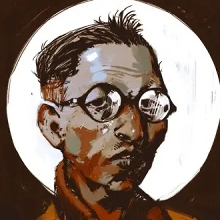
Kim Kitsuragi
Disco Elysium
I relate immensely to his controlfreak tendencies. And him always trying his very best to stay the sanest person in the room. And the experience of a person who just wants to live his life as an ordinary person he is and just doing his job the best he can, trapped in a weird and biased perception of him because he happens to be X or Y which of course speaks of him more than all the things he actually is. Also his calm and deadpan personality and a strong reliance on notes and lists And him being a huge nerd about those few things he's secretly very passionate about are a huge Yeah. And although I don't share with Kim his origin of a stolen dream of being a pilot, aviation and cars are indeed Super cool (would love to dig deeper in both topics eventually!)
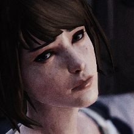
Max Caulfield
Life is Strange
An avoidant people pleaser. Someone both judgemental and empathetic, always trying her best and never feeling like she's doing enough. Journaling and reflecting endlessly rather than talking to people she has issues with. Freezing a moment and observing it rather than living through it. Ah, and a ghoster without a cause, my favorite part. I love Max as a character a lot, but I'm really not proud with the fact she's one of the most relatable characters for me for all these years. I would definitely overuse my powers trying to reach the best outcome possible and avoid consequences if I was her, so. Yeah. (Although I do prefer reading her time-rewinding abilities as a metaphor and not an actual part of the plot, but this section is not about my favorite LiS reading)
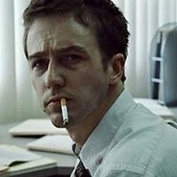
The Narrator
Fight Club
A lonely and depressed go-with-a flow-guy with a clerk job and both detest for capitalism and being its another obvious slave. He's literally me fr fr. Although why do some of us have a bold homoerotic head-roommate (and a head-baddie who is even more depressed, but Marla's status is very much up for interpretation and this section ain't about my favorite theories anyway) and some of us don't. Unfair! /j
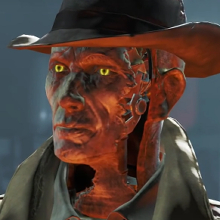
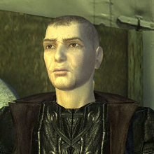
Stakh / Stanislav Rubin
Pathologic
My perception of him is based on the first game version of Rubin mostly, although I did like some parts of his later retcon (very little parts admittedly, they butchered my boy so bad And stole his neat leather coat). I see him as a deeply lonely and reclusive person, who does what he thinks must be done for a Greater Good. And also very principled one, as well as vindictive and guilt-driven sigh. Working hard but never being the best or the brightest one, he is strongly fascinated with those few people around him he sees as such, and respects and idealizes them endlessly.
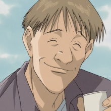
Wolfgang Grimmer
Monster
I also had to sort of...Reinvent my smile? On a certain point of my life, so Grimmer being a good person with a strong disconnection from his own emotions got a huge nod from me when I was watching the anime. You're so chill thank you I gave up
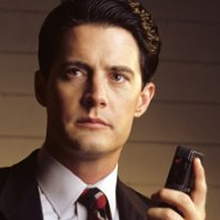
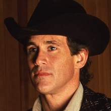
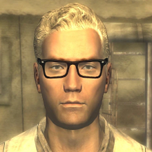
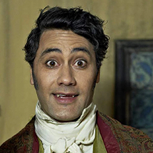
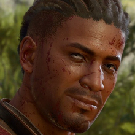
Wyll Ravengard
Baldur's Gate 3
I'll never tell you I'd very likely make a questionable deal for a chance to be a better version of myself, to be enough, to be actually helpful and to be a person to be proud of if I lived in a fantasy world, but there will be signs. I love his identity crisis and how messed up the situation he got himself into is.
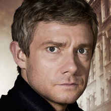
John Watson
Sherlock (bbc)
Yep, this one version specifically, although my relationships with bbc sherlock series are...Complicated. But basically the way he balances being quite irritable person and being polite and patient just enough to act normal unlike, well, certain people around him. You can easily tell how tired he is. He is also dead loyal.
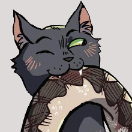
Ravenpaw
Warrior Cats
Of course my favorite gay cat is there, he's basically THE 'literally me' character from the Warrior Cats books :D But, well, in a nutshell: a nervous anxious teen to more or less chill adult character development.
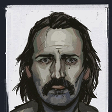
Tommy Le Homme
Disco Elysium
Melancholic, thoughtful and ✨nonchalant✨, yet obviously caring (and longing). I love the fact his alias is basically Tommy Some Guy though, i think that's iconic.
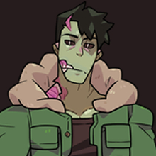
Brian Yu
Monster Prom
A (somewhat) edgy/intimidatingly looking deadpan chill guy. Friendly, not ambitious at all and super sleepy. Ah, and he's also quite social awkward, I believe? So yea
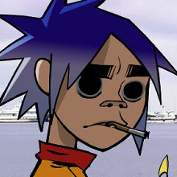
2-D
Gorillaz
Yep, Damon Albarn's fucking sad guy sona is also there. A soft yet super awkward and apathetic/passive person. Yeah.
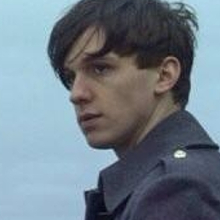
Elvis / Mark Elways
Awaydays
I'm not incriminating myself This bad, but he, well. He is a character I feel uncomfortably strong connection with, although I'd really prefer not to.
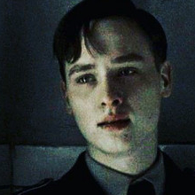
Albrecht Stein
NaPolA / Before the Fall
Ah, my own personal cursed doll I will seemingly never get rid of in this kind of lists. A soft-spoking person with a strong moral compass and tendencies of being very dramatic and passionate about them. And a high suicidal risk, which is honestly super understandable in his situation.